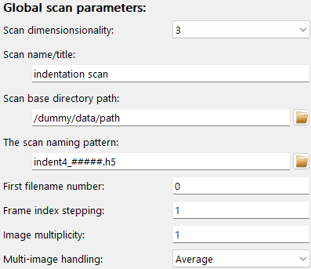

Define scan frame#
The Scan setup frame is a graphical interface to configure the
ScanContext
which holds information about the scan setup.
The frame only holds the configuration widgets for its Parameters as well as some buttons for convenience functionality.
{kind=link}
Control buttons#
Import scan settings#

The Scan settings can be imported from files written by pydidas. Clicking the corresponding button will open a selection dialogue to pick the file with the stored settings. File extensions will be pre-selected based on the available importers.
Import scan settings from beamline metadata files#

A second option for importing scan settings is to use beamline metadata files. These files are created by beamline software and contain information about the scan setup. The button will open a file selection dialogue to pick the file with the stored settings. File extensions will be pre-selected based on the available importers.
If you are unsure how to proceed for your specific beamline metadata files, please discuss with your local beamline support.
If you are missing a specific beamline metadata importer, please contact the development team by raising a GitHub issue.
Reset Parameters#

The “Reset all scan settings” button allows the user to change all Parameters back to their default values.
Export scan settings#
At the bottom of the Frame, the export button allows users to export the current
ScanContext
Parameters to a file. This button will open a filename dialogue.
Scan dimension explanation#

The scan dimension explanation section gives detailed information about the ordering of scan scan dimensions. The slowest scan dimension is dimension no. 0 and the fastest is the last scan dimension. This ordering corresponds to how the scan must be performed algorithmically. The button opens a window with an in-depth explanation, including images.
Global Parameters#
Here, global refers to general scan Parameters in contrast to Parameters for a specific scan dimension. The scan dimensionality defines the number of used dimensions (and also shows or hides the corresponding widgets for the selected dimensions). The scan title is used as reference in titles and captions.
The base directory and scan name pattern are used for InputPlugins to define the raw data source. The starting index
defines the number of the first data file.
For a detailed description of each Parameter, please refer to the list of ScanContext Parameters found at the bottom of this page.
Configuring a scan dimension#
Note
Following the python nomenclature, the first index is 0 (zero) and so forth.
The configuration for each scan dimension is the same, and dimension #1 is shown only exemplarily.
At the top, next to the name, are two small buttons with up and down arrows which allow to move the given scan dimension up or down in the list to change the order. Only reasonable arrows are shown, for example the first scan dimension cannot be further moved upwards.
Each scan dimension has one mandatory field which is the number of scan points. This number determines the layout of the data in pydidas. The other information is metadata which is used to determine labels and axis ranges (for plots and export metadata) but which has no further relevance. The name of the scan dimension corresponds to the label. The unit is also used to label the dimension range.
The range of each scan dimension is determined by the number of points \(N\), the step width \(\Delta x\) between two points and the offset \(x_0\). The full range is thus
List of all ScanContext Parameters#
- scan_dim (type: int, default: 2, unit: “”)
The scan dimensionality. This defines the number of processed dimensions.
- scan_title (type: str, default: “”, unit: “”)
The scan name or title. This is used exclusively for reference in axis labels and result exporters.
- scan_base_directory (type: Path, default: “.”, unit: “”)
The base directory in which the raw scan data is stored.
- scan_name_pattern (type: str, default: “”, unit: “”)
The name pattern for scan files, subdirectories etc. User hashes (“#”) to mark wildcard characters to be filled in with the current index.
- scan_start_index (type: int, default: 0, unit: “”)
The starting index for files etc. of the first point in the scan.
- scan_index_stepping (type: int, default: 1, unit: “”)
The stepping of the index, i.e. the difference in the index between two adjacent scan points.
- scan_multiplicity (type: int, default: 1, unit: “”)
The image multiplicity: The number of frames acquired at each unique scan point. Use this value only if the multiple images should be combined. Otherwise, use an additional scan dimension for the multiplicity.
- scan_multi_image_handling (type: str, default: “Average”, unit: “”)
The handling instructions for multiple frames at each scan point. Can be either “Average” or “Sum”.
The following Parameters exist for each scan dimension, i.e. scan_dim{i}_label stands for scan_dim0_label, scan_dim1_label, scan_dim2_label, scan_dim3_label. For clarity, only the generic form is described here.
- scan_dim{i}_label (type: str, default: “”)
The axis name for scan direction {i}. This information will only be used for labelling.
- scan_dim{i}_n_points (type: int, default: 0)
The number of scan points in scan direction {i}.
- scan_dim{i}_delta (type: float, default: 1)
The step width between two scan points in scan direction {i}.
- scan_dim{i}_offset (type: float, default: 0)
The coordinate offset of the movement in scan direction {i} (i.e. the counter / motor position for scan step #0).
- scan_dim{i}_unit (type: str, default: “”)
The unit of the movement / steps / offset in scan direction {i}.